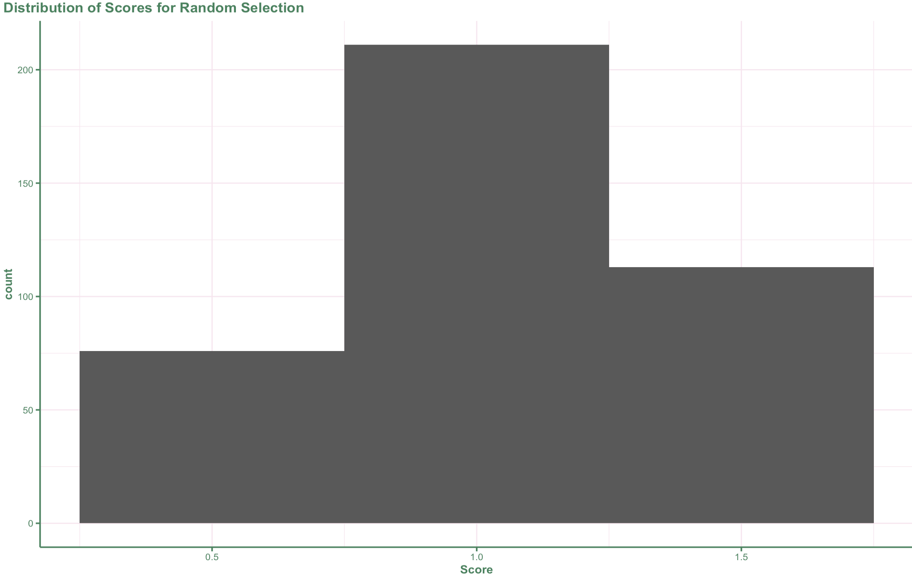
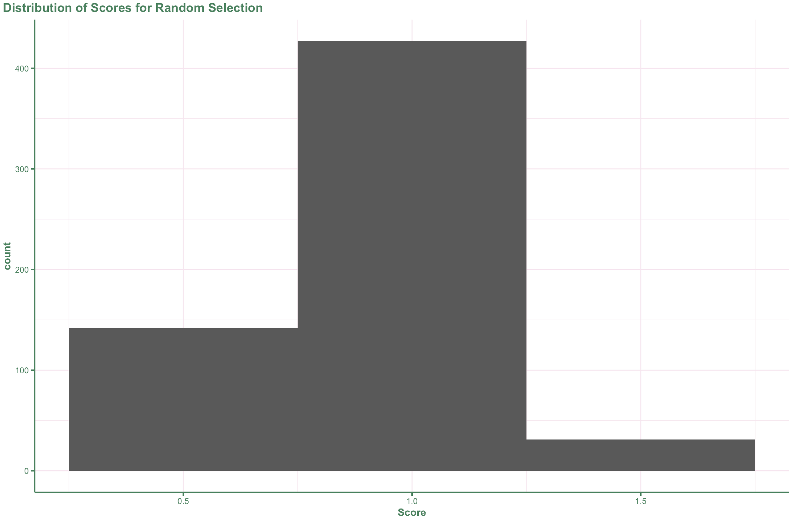
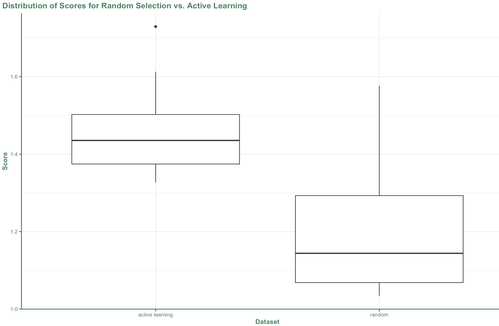
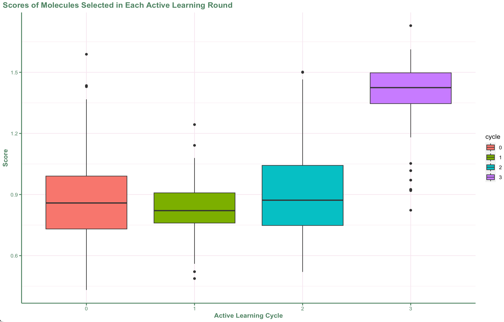

在药物发现中，使用主动学习来识别具有所需特性的分子非常有价值。本文演示了如何使用主动学习来查找具有与查询分子相似的形状和药效团特征的分子。我们使用高斯过程回归作为机器学习模型，并使用 Tanimoto 相似性作为核函数。我们还定义了几个获取函数，包括贪婪函数和最大化概率改进 (PI) 函数。我们使用来自 LitPCBA 数据集的分子进行了实验，结果表明主动学习优于随机选择。
在本次教程中，我们将考虑一个完整的示例，其中我们使用主动学习来查找具有与查询分子相似的形状和药效团特征的分子。此笔记本中的一些代码和数据是从其他开源项目中借用的。非常感谢这些软件包的作者开源代码。
导入我们需要的库。
from operator import itemgetter
import numpy as np
import pandas as pd
import seaborn as sns
import sklearn.gaussian_process as gp
import useful_rdkit_utils as uru
from modAL.acquisition import BaseLearner
from modAL.models import BayesianOptimizer
from modAL.utils.data import modALinput
from modAL.acquisition import optimizer_PI
from rdkit import Chem
from sklearn.gaussian_process import GaussianProcessRegressor
from tqdm.auto import tqdm
from modAL.utils.selection import multi_argmax
from align3D_score import score_alignment
from gen_conformers import generate_conformers
import py3DmolOracle 是一个组件，它将查询分子与数据库中的分子进行比较，并根据它们的形状和药效团特征对它们进行评分。在本文中，我们使用自定义的 Oracle，该 Oracle 使用 ESPSim 库来计算分子之间的形状相似性，并使用 RDKit 来计算药效团相似性。Oracle 返回一个分数，该分数表示查询分子与数据库分子之间的相似性程度。
class ShapeOracle:
# instantiate the oracle with a query molecule
def __init__(self, ref_molfile):
"""
Initialize the oracle with a query molecule.
Args:
ref_molfile (str): The path to the query molecule file.
"""
self.ref_mol = Chem.MolFromMolFile(ref_molfile)
self.ref_mol = Chem.AddHs(self.ref_mol)
def get_values(self, input_smiles_list):
"""
Get the values for the input smiles list.
Args:
input_smiles_list (list): The list of SMILES strings.
Returns:
list: The list of values.
"""
result_list = []
for smi in tqdm(input_smiles_list):
res = None
mol = Chem.MolFromSmiles(smi)
if mol:
mol = Chem.AddHs(mol)
mol_3d = generate_conformers(mol, 25)
if mol_3d:
res = score_alignment(mol_3d, self.ref_mol)
result_list.append(res)
return result_list在高斯过程回归 (GPR) 中，核函数用于衡量数据点之间的相似性。在本文中，我们使用 Tanimoto 相似性作为核函数。Tanimoto 相似性是一种衡量两个集合相似性的度量，它计算两个集合中共有元素的数量与两个集合中元素总数之比。
我们使用 Tanimoto 相似性作为核函数，因为它是衡量分子之间形状和药效团特征相似性的常用方法。通过使用 Tanimoto 相似性作为核函数，我们的 GPR 模型能够学习分子之间的相似性模式，并对新分子的相似性进行预测。
def calculate_similarity(a, b):
"""
Calculate the Tanimoto similarity between two sets of fingerprints.
Args:
a (np.array): The first set of fingerprints.
b (np.array): The second set of fingerprints.
Returns:
np.array: The Tanimoto similarity between the two sets of fingerprints.
"""
# Tanimoto similarity a vs. b
aa = np.sum(a, axis=1, keepdims=True)
bb = np.sum(b, axis=1, keepdims=True)
ab = np.matmul(a, b.T)
return np.true_divide(ab, aa + bb.T - ab)
class TanimotoKernel(gp.kernels.NormalizedKernelMixin,
gp.kernels.StationaryKernelMixin, gp.kernels.Kernel):
def __init__(self):
pass
def __call__(self, X, Y=None, eval_gradient=False):
"""
Evaluate the Tanimoto kernel.
Args:
X (np.array): The first set of fingerprints.
Y (np.array, optional): The second set of fingerprints. If None, then Y = X.
eval_gradient (bool, optional): Whether to evaluate the gradient of the kernel.
Returns:
np.array: The Tanimoto similarity between the two sets of fingerprints.
"""
assert not eval_gradient
if Y is None:
Y = X
return calculate_similarity(X, Y)tqdm.pandas()我们从 LitPBCBA 数据集中读取输入数据。该数据集包含具有已知活性的分子。我们将使用此数据来训练我们的机器学习模型并评估其性能。
df = pd.read_csv("data/MAPK1.csv")查看数据
我们快速查看一下数据。在本例中，我们将忽略 activity 这一列。
df生成机器学习模型的描述符
添加一个 fp 指纹列到数据框中。
df['fp'] = df.SMILES.progress_apply(uru.smi2numpy_fp)创建一个 X_pool (指纹池) 供主动学习算法从中提取。
X_pool = np.stack(df.fp.values)对于贪婪搜索，我们希望选择得分最高的分子，但我们希望避免选择相同的分子多次。此函数接受预测列表并执行以下操作：
def find_best_idx(predicted, used, num_to_choose):
tmp_list = list(enumerate(predicted))
tmp_list.sort(key=itemgetter(1), reverse=True)
tmp_list = [x for x in tmp_list if x[0] not in used]
tmp_list = [x[0] for x in tmp_list]
return tmp_list[:num_to_choose]将形状搜索结果与分子合并到数据框中的函数。
def compile_results(df_in, shape_results):
df_in['shape_res'] = shape_results
df_in.dropna(subset='shape_res',inplace=True)
df_in['score'] = [x.shape_score + x.esp_score + x.rdkit_score for x in df_in.shape_res]
return df_in这里有几个获取函数。
def greedy(optimizer: BaseLearner, X: modALinput, n_instances=1, used=[]):
res = optimizer.predict(X)
best_idx = find_best_idx(res, used, n_instances)
return best_idx, X[best_idx]
def my_max_PI(optimizer: BaseLearner, X: modALinput, tradeoff: float = 0,
n_instances: int = 1, used = [], cycle = -1) -> np.ndarray:
pi = optimizer_PI(optimizer, X, tradeoff=tradeoff)
best_idx = find_best_idx(pi, used, n_instances)
return best_idx, X[best_idx]创建将返回值的 Oracle。
oracle = ShapeOracle("data/2chw_lig.sdf")这是主要的主动学习循环。我们将进行 3 个周期的主动学习。在 Colab 上，每个循环需要 1-2 分钟，在 M1 Mac 上，每个循环需要 10-20 秒。
# number of molecules to select at each active learning cycle
n_instances = 100
# number of active learning cycles to run
n_cycles = 3
# define the acquistion function
query_strategy = my_max_PI
# select an initial random sample
sample_df = df.sample(n_instances).copy()
sample_df['cycle'] = 0
# get the shape scores for the random sample
init_shape_res = oracle.get_values(sample_df.SMILES.values)
# add the scores to the dataframe
def compile_results(df_in, shape_results):
df_in['shape_res'] = shape_results
#df_in.dropna(subset='shape_res',inplace=True)
df_in['score'] = [x.shape_score + x.esp_score + x.rdkit_score for x in df_in.shape_res]
return df_in
sample_df = compile_results(sample_df, init_shape_res)
# define X and y to train the initial model
X_initial = sample_df.fp.values
y_initial = sample_df.score.values
# instantiate the optimizer with an estimator, training data, and an acquistion function
optimizer = BayesianOptimizer(estimator=GaussianProcessRegressor(kernel=TanimotoKernel()),
X_training=np.stack(X_initial), y_training=y_initial,
query_strategy=query_strategy)
# initalize a list of results
result_list = [sample_df]
used = list(sample_df.index)
# the active learning loop
for i in range(0, n_cycles):
# ask the optimizer for the next set of molecules
query_idx, query_desc = optimizer.query(X_pool, n_instances=n_instances, used=used)
# create dataframe with the next set of molecules
tmp_df = df.iloc[query_idx].copy()
# get the shape scores
shape_res = oracle.get_values(tmp_df.SMILES.values)
# add the results to the dataframe
tmp_df = compile_results(tmp_df, shape_res)
tmp_df['cycle'] = i+1
# add the current dataframe to result_list
result_list.append(tmp_df)
# keep track of the molecules we've used
used += list(tmp_df.index)
# update the optimizer with the new values
#optimizer.teach(query_desc, tmp_df.score.values)
optimizer.teach(np.stack(tmp_df.fp.values), tmp_df.score.values)将主动学习周期的结果合并到一个数据框中。
combo_df = pd.concat(result_list)
len(combo_df)查看主动学习选择的分数分布。
# sns.displot(x="score",data=combo_df);ggplot(py$combo_df, aes(x = score)) +
geom_histogram(binwidth = 0.5) +
labs(title = "Distribution of Scores for Random Selection",
x = "Score") +
myggtheme
主动学习真的更好吗？让我们选择 600 个随机分子，并与使用主动学习选择的 600 个分子进行比较。
random_df = df.sample(600).copy()
random_shape_res = oracle.get_values(random_df.SMILES.values)
random_df = compile_results(random_df, random_shape_res)查看随机选择的分数分布
# sns.displot(x="score",data=random_df);ggplot(py$random_df, aes(x = score)) +
geom_histogram(binwidth = 0.5) +
labs(title = "Distribution of Scores for Random Selection",
x = "Score") +
myggtheme
将随机选择的分数与主动学习进行比较。
active_top_100_df = combo_df.sort_values("score",ascending=False).head(100)
active_top_100_df['dataset'] = "active learning"
random_top_100_df = random_df.sort_values("score",ascending=False).head(100)
random_top_100_df['dataset'] = "random"
plot_df = pd.concat([active_top_100_df, random_top_100_df])
sns.boxplot(x="dataset",y="score",data=plot_df);ggplot(py$plot_df,aes(x = dataset, y = score)) +
geom_boxplot() +
labs(title = "Distribution of Scores for Random Selection vs. Active Learning",
x = "Dataset",
y = "Score") +
myggtheme
绘制每个主动学习轮中选择的分子的分数。请记住，第一个主动学习周期是随机选择的。
ax = sns.boxplot(x="cycle", y="score", data=combo_df,color="lightblue")
ax.set_xlabel("Active Learning Cycle");py$combo_df %>%
mutate(cycle = as.factor(cycle)) %>%
ggplot(., aes(x = cycle, y = score, fill = cycle)) +
geom_boxplot() +
labs(title = "Scores of Molecules Selected in Each Active Learning Round",
x = "Active Learning Cycle",
y = "Score") +
myggtheme
检查最高分叠加项，确保我们的结果合理, 我们将使用 Py3DMol 来完成此操作。
query_mol = Chem.MolFromMolFile("data/2chw_lig.sdf")
# get the highest scoring molecule from combo_df
db_mol = combo_df.sort_values("score",ascending=False).shape_res.values[0].best_mol
db_mol = Chem.RemoveHs(db_mol)
# For Py3DMol, we need to convert molecules to molblocks
query_mblock = Chem.MolToMolBlock(query_mol)
db_mblock = Chem.MolToMolBlock(db_mol)
# create a Py3DMol view
view = py3Dmol.view()
# add the molecules
view.addModel(query_mblock, 'mol')
view.addModel(db_mblock, 'mol')
# color the molecules
view.setStyle({'model': 0},{'stick':{'colorscheme':'greenCarbon'}})
view.setStyle({'model': 1},{'stick':{'colorscheme':'lightgreyCarbon'}})
# Zoom in and show the molecules
view.zoomTo()
view.show()If you see mistakes or want to suggest changes, please create an issue on the source repository.
Text and figures are licensed under Creative Commons Attribution CC BY 4.0. Source code is available at https://github.com/jixing475/jixing.github.io, unless otherwise noted. The figures that have been reused from other sources don't fall under this license and can be recognized by a note in their caption: "Figure from ...".
For attribution, please cite this work as
Liu (2024, April 9). Jixing Liu: 学习笔记: 在 3D 相似性搜索中使用主动学习. Retrieved from https://jixing.org/posts/2024-04-09-using-active-learning-in-a-3d-similarity-search/
BibTeX citation
@misc{liu2024学习笔记:,
author = {Liu, Jixing},
title = {Jixing Liu: 学习笔记: 在 3D 相似性搜索中使用主动学习},
url = {https://jixing.org/posts/2024-04-09-using-active-learning-in-a-3d-similarity-search/},
year = {2024}
}